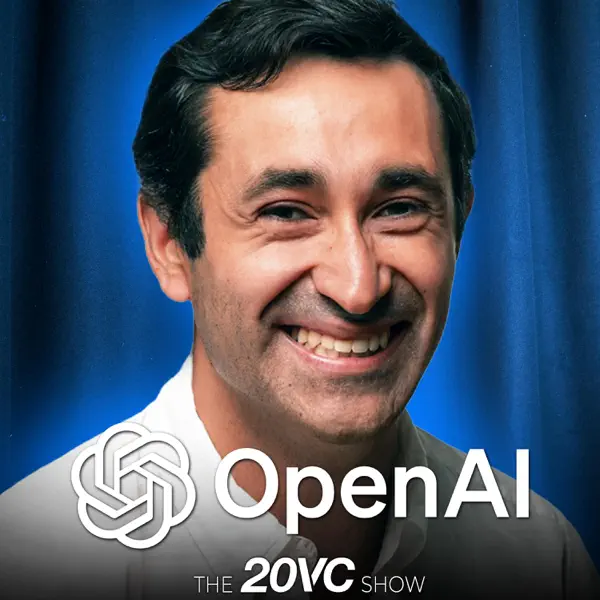

Q&A
Fuel for thought

▶

▶

▶
▶

▶
From ChatGPT copy-paste to building AI Skills
Where it all began
The workflow was dead-simple. Open a browser, ask ChatGPT, grab the answer.
Simple. And honestly, good enough at the time.
Why it worked
• Tasks were straightforward enough
• Most issues solved with a single question
• Small fixes on a mature codebase
• Zero setup, zero config, zero friction
"I was the entire pipeline."
Evolution
Tool #2
AI Without Leaving :terminal
I didn't want to leave Vim. avante.vim meant I didn't have to — ask a question, get a suggestion, stay in flow.
No more switching to a browser tab mid-thought. For the first time, AI felt like part of my editor, not a separate tool.
click to cycle examples
Tools #3 & #4
When AI Got Its Own Editor
Both are full AI IDEs with agentic workflows and multi-file edits. I used Antigravity for side projects, Windsurf at work.
Antigravity stood out with built-in browser debugging and plan mode. Windsurf was solid, similar experience. Honestly, they blur together.
But the journey wasn't over…
A personal choice
I live in the terminal. Vim is my editor. Claude Code runs right next to it — same window, zero friction.
Vim left, Claude right. One glance, zero switching.
Give it a goal, not steps. It figures out the rest.
Teach it your rules. Connect your tools.
Beyond the keyboard
Why Am I Still Typing?
The missing piece
Skills are playbooks for AI. They teach it how to handle specific domains — your rules, your workflow. Build once, anyone on the team can use them.
Smart, can follow instructions, learns fast. But without guidance:
Capable of anything, but needs to be told your way of doing things.
A recipe turns "make tonkotsu ramen" from vague into precise:
Written once by someone who knows the dish. Anyone can follow it.
Give that person all your recipes, and now they:
Not just capable — produces your results, every time.
Under the hood
Don't start from scratch
skills.sh — 78K+ community skills
Works with Claude Code, Cursor, Copilot, Windsurf, and more.
A skill that helps you brainstorm before building
AI helps you build your own skills
"You don't need to be an expert to write one."
How they complement each other
@Levin already covered MCP — see how they work together
Everything you write and maintain yourself — the knowledge and the DIY tools:
You own it, you maintain it, you share it. Can reach outside, but it's DIY.
A standardized way to connect to external services — someone else maintains the integration:
You could drive there yourself (scripts), but why? MCP is reusable, maintained, and standardized.
Your recipe says "use Yamada pork bones" — instead of driving there yourself, you call the delivery service.
Skills define what to do. MCP provides a maintained delivery service to do it.
Practical tip
Duplicate the file
Right-click the third-party Figma file and choose Duplicate to create your own copy.
Open your copy
The duplicated file lives in your Drafts with full edit access — no restrictions.
Enable Dev Mode ✓
Toggle Dev Mode on your copy — full MCP integration is now available.
The bigger picture
Manually translating designs into code is one of the most repetitive tasks in frontend work. AI handles the heavy lifting.
Pros
Cons
Skill in action
Managing translation keys used to mean juggling Google Sheets across 5 modules. This skill does it all from the terminal.
Live workflow
Google Sheets, 5 modules, manual updates → one sentence
From ticket to tasks
Give it a Jira ticket, get back a full breakdown with subtasks, estimates, and implementation specs.
Multi-Agent Pipeline
## Task Breakdown: MDX-12272 Delay Cancellation Cancel Button _Reviewed by: Requirements Analyst → Codebase Scout + Project Architect → Senior Estimator_ ### Scope | Requirement | Web | JMA | Backend | |-------------------------------------------------|-----|-----|---------| | Show cancel button when delivery 20+ min late | ✅ | ✅ | | | Poll anyCarry eligibility API every 30s | ✅ | | ✅ | | Confirm → cancel → redirect shared flow | ✅ | | | | Cancel verification (poll GetDeliveryCancelled) | ✅ | | ✅ | | Cancel-specific error prompt | ✅ | ✅ | | | Push notification for cancellation confirmation | | ✅ | ✅ | ### Tasks | # | Task | Est. | Affected Files | Notes | |---|------|------|----------------|-------| | 1 | Eligibility check + polling hook | 1.5d | `AdmsService.ts`, `useIsEligibleForDelayCancellation.ts` | New service method (fail-closed) + hook polling every 30s, gated by `DS_APPROACHING_STORE`. Scout: existing `AdmsService` pattern in `getDeliveryStatus` is reusable. | | 2 | Extract shared cancel flow | 1d | `Progress.tsx`, `useCancelOrderWithConfirmation.ts` | Pull confirm → cancel → redirect logic out of `Progress.tsx` into shared hook. Both existing cancel and delay-cancel reuse it. Architect: `Progress.tsx` has 3 other consumers — verify they still work. | | 3 | `DelayCancellationNote` component + cancel verification | 1.5d | `DelayCancellationNote.tsx`, `Progress.tsx`, `OrderCancelled.tsx` | Renders cancel button when eligible, calls shared hook, polls `GetDeliveryCancelledOrder` to confirm. Merged with verification — same user flow. | | 4 | `CancelFailed` error prompt + i18n | 0.5d | `CancelFailed.tsx`, `messages/delivery.ts` | Replace generic "Unexpected Error" with cancel-specific message + retry. Scout: `simpler` — follows existing `ErrorPrompt` pattern exactly. | | 5 | QA support & bug fixes | 0.5d | — | Buffer for QA back-and-forth on cancel edge cases (timeout, network errors, status race conditions). | | | **Total** | **5d** | | | ### Potential Issues - **Status race condition:** User taps cancel while delivery status transitions away from `DS_APPROACHING_STORE` — hook must clear eligibility immediately on status change to avoid stale cancel attempts. - **Polling cleanup:** If user navigates away mid-poll, both the eligibility interval and the cancellation verification poll must be cleaned up to prevent memory leaks. - **Blast radius on Progress.tsx:** Architect flagged 3 other components consuming cancel logic from `Progress.tsx` — extracting the hook requires verifying `OrderDetail`, `DeliveryTracking`, and `StatusBar` still work. ### Questions for PM - Should the cancel button show for all delivery types (McDelivery + Okihai) or McDelivery only? - If the cancel verification poll times out after 10s, should we show the error prompt or silently retry? - The anyCarry eligibility endpoint — is this already deployed to STG, or do we need to coordinate with backend? ### Estimation Notes Merged analyst's original 6 tasks into 4. Scout confirmed `AdmsService` pattern is reusable (saved 0.5d on task 1). Merged `DelayCancellationNote` + cancel verification into one task — same user flow, same PR. Architect's blast radius flag on `Progress.tsx` kept task 2 at 1d despite scout rating `as-expected`. Added 0.5d QA buffer (5d total qualifies for minimum buffer).
Reviewed by: Requirements Analyst → Codebase Scout + Project Architect → Senior Estimator
| Requirement | Web | JMA | Backend |
|---|---|---|---|
| Show cancel button when delivery 20+ min late | ✅ | ✅ | |
| Poll anyCarry eligibility API every 30s | ✅ | ✅ | |
| Confirm → cancel → redirect shared flow | ✅ | ||
| Cancel verification (poll GetDeliveryCancelled) | ✅ | ✅ | |
| Cancel-specific error prompt | ✅ | ✅ | |
| Push notification for cancellation confirmation | ✅ | ✅ |
| # | Task | Est. | Affected Files | Notes |
|---|---|---|---|---|
| 1 | Eligibility check + polling hook | 1.5d | AdmsService.ts, useIsEligibleForDelayCancellation.ts |
New service method (fail-closed) + hook polling every 30s. Scout: existing pattern reusable. |
| 2 | Extract shared cancel flow | 1d | Progress.tsx, useCancelOrderWithConfirmation.ts |
Architect: 3 other consumers — verify they still work. |
| 3 | DelayCancellationNote + cancel verification | 1.5d | DelayCancellationNote.tsx, Progress.tsx, OrderCancelled.tsx |
Merged component + verification — same user flow, same PR. |
| 4 | CancelFailed error prompt + i18n | 0.5d | CancelFailed.tsx, messages/delivery.ts |
Scout: simpler — follows existing ErrorPrompt pattern. |
| 5 | QA support & bug fixes | 0.5d | — | Buffer for cancel edge cases (timeout, network, status races). |
| Total | 5d |
DS_APPROACHING_STORE — hook must clear eligibility immediately on status change.OrderDetail, DeliveryTracking, and StatusBar still work.Merged analyst's original 6 tasks into 4. Scout confirmed AdmsService pattern is reusable (saved 0.5d on task 1). Merged DelayCancellationNote + cancel verification into one task — same user flow, same PR. Architect's blast radius flag on Progress.tsx kept task 2 at 1d despite scout rating as-expected. Added 0.5d QA buffer (5d total qualifies for minimum buffer).
# Change: Add Delay Cancellation Cancel Button ## Why When a McDelivery order is running 20+ minutes late, users currently have no way to cancel — they're stuck waiting indefinitely. Adding a cancel button during extended delays gives users control and reduces support escalations. Ticket: [MDX-12272](#MDX-12272) Requirements: [MDI-498](#MDI-498) ## What Changes - **Eligibility polling:** New service method polls anyCarry API every 30s to check if order qualifies for delay cancellation, gated by `DS_APPROACHING_STORE` status - **Shared cancel flow:** Extract confirm → cancel → redirect logic from `Progress.tsx` into reusable `useCancelOrderWithConfirmation` hook - **Cancel button UI:** New `DelayCancellationNote` component renders cancel button when eligible, with cancel verification polling `GetDeliveryCancelledOrder` - **Error handling:** Cancel-specific error prompt replaces generic "Unexpected Error" - Out of scope (JMA): Native app cancel button UI — handled by mobile team - Out of scope (Backend): anyCarry eligibility API endpoint — already deployed ## Impact - Affected areas: DeliveryStatus/Progress (cancel flow extraction + new component), AdmsService (new API method) - High-risk: `Progress.tsx` has 3 other consumers of cancel logic; extraction must verify `OrderDetail`, `DeliveryTracking`, and `StatusBar` still work - Estimated effort: 5d (4 tasks + 0.5d QA buffer)
When a McDelivery order is running 20+ minutes late, users currently have no way to cancel — they're stuck waiting indefinitely. Adding a cancel button during extended delays gives users control and reduces support escalations.
Ticket: MDX-12272
Requirements: MDI-498
DS_APPROACHING_STORE statusProgress.tsx into reusable useCancelOrderWithConfirmation hookDelayCancellationNote component renders cancel button when eligible, with cancel verificationProgress.tsx has 3 other consumers of cancel logic; extraction must verify OrderDetail, DeliveryTracking, and StatusBar still work## Context The delivery status screen (`Progress.tsx`) currently owns the cancel order flow inline. MDX-12272 adds a second cancel trigger — a delay-cancellation button that appears when anyCarry reports a 20+ minute delay. Both triggers need to share the same confirm → cancel → redirect logic. The Architect identified that `Progress.tsx` is consumed by 3 other components (`OrderDetail`, `DeliveryTracking`, `StatusBar`), making the cancel logic extraction a blast-radius concern. ## Decisions - **Extract cancel hook first (Task 2):** Pull `useCancelOrderWithConfirmation` out of `Progress.tsx` before building the new component. This ensures both cancel flows share identical logic from day one — no divergence. - **Fail-closed eligibility:** `AdmsService.isEligibleForDelayCancellation` returns `false` on any error. The cancel button stays hidden if the API is flaky — better to miss a cancellation opportunity than show a broken button. - **Poll-based eligibility (30s):** WebSocket would be more responsive but anyCarry doesn't support it. 30s polling balances user experience vs. API load. Polling only activates when status is `DS_APPROACHING_STORE`. - **Cancel verification:** After the cancel API returns success, poll `GetDeliveryCancelledOrder` for up to 10s to confirm the backend actually processed it. This prevents showing "cancelled" when the backend silently failed. ## Risks / Trade-offs - **Blast radius on Progress.tsx (HIGH)** → Mitigate by running existing test suites for all 3 consumer components after extraction. Add integration test for the new hook. - **Status race condition (MEDIUM)** → Hook must watch delivery status changes and immediately clear eligibility when status leaves `DS_APPROACHING_STORE`. Use cleanup function in useEffect. - **Polling memory leak (LOW)** → Both eligibility and verification polls must clear on unmount. Standard useEffect cleanup pattern. ## Open Questions - Should the cancel button show for all delivery types (McDelivery + Okihai) or McDelivery only? - If verification poll times out after 10s, show error prompt or silently retry? - The anyCarry eligibility endpoint — confirmed deployed to STG?
The delivery status screen (Progress.tsx) currently owns the cancel order flow inline. MDX-12272 adds a second cancel trigger — a delay-cancellation button that appears when anyCarry reports a 20+ minute delay. Both triggers need to share the same confirm → cancel → redirect logic.
The Architect identified that Progress.tsx is consumed by 3 other components (OrderDetail, DeliveryTracking, StatusBar), making the cancel logic extraction a blast-radius concern.
useCancelOrderWithConfirmation out of Progress.tsx before building the new component. This ensures both cancel flows share identical logic from day one — no divergence.AdmsService.isEligibleForDelayCancellation returns false on any error. The cancel button stays hidden if the API is flaky.DS_APPROACHING_STORE.GetDeliveryCancelledOrder for up to 10s to confirm backend processed it.# Tasks: Delay Cancellation Cancel Button ## 1. Eligibility check + polling hook (1.5d) - [ ] 1.1 Add `isEligibleForDelayCancellation` method to `AdmsService.ts` — call anyCarry delay-cancellation endpoint, return `false` on error - [ ] 1.2 Create `useIsEligibleForDelayCancellation.ts` hook — poll every 30s, only activate when delivery status is `DS_APPROACHING_STORE` - [ ] 1.3 Add cleanup: clear interval on unmount or when status changes away from `DS_APPROACHING_STORE` - [ ] 1.4 Write unit tests for service method (success, error → false) and hook (polling lifecycle, status gating) ## 2. Extract shared cancel flow (1d) - [ ] 2.1 Create `useCancelOrderWithConfirmation.ts` — extract confirm → cancel → redirect logic from `Progress.tsx` - [ ] 2.2 Refactor `Progress.tsx` to use the new shared hook (no behavior change) - [ ] 2.3 Verify `OrderDetail`, `DeliveryTracking`, and `StatusBar` still work with extracted hook - [ ] 2.4 Write unit tests for shared hook, run existing test suites for consumer components ## 3. DelayCancellationNote + cancel verification (1.5d) - [ ] 3.1 Create `DelayCancellationNote.tsx` — renders cancel button when `useIsEligibleForDelayCancellation` returns true - [ ] 3.2 Wire to `useCancelOrderWithConfirmation` hook for the cancel action - [ ] 3.3 Add cancel verification: after cancel API succeeds, poll `GetDeliveryCancelledOrder` for up to 10s - [ ] 3.4 Handle verification timeout — show `CancelFailed` error prompt - [ ] 3.5 Integrate into `Progress.tsx` delivery status screen - [ ] 3.6 Write unit tests for component rendering, verification polling, and timeout behavior ## 4. CancelFailed error prompt + i18n (0.5d) - [ ] 4.1 Create `CancelFailed.tsx` following existing `ErrorPrompt` pattern - [ ] 4.2 Add i18n messages to `messages/delivery.ts` (JA + EN) - [ ] 4.3 Include retry button that re-triggers cancel flow - [ ] 4.4 Write unit tests for error prompt rendering and retry action ## 5. QA support & bug fixes (0.5d) - [ ] 5.1 Support QA testing on STG — cancel edge cases (timeout, network errors, status race conditions) - [ ] 5.2 Fix reported bugs from QA cycle
isEligibleForDelayCancellation method to AdmsService.ts — call anyCarry endpoint, return false on erroruseIsEligibleForDelayCancellation.ts hook — poll every 30s, gated by DS_APPROACHING_STOREuseCancelOrderWithConfirmation.ts — extract logic from Progress.tsxProgress.tsx to use the new shared hookOrderDetail, DeliveryTracking, and StatusBar still workDelayCancellationNote.tsx — renders cancel button when eligibleuseCancelOrderWithConfirmation hookGetDeliveryCancelledOrder for up to 10sProgress.tsxCancelFailed.tsx following existing ErrorPrompt patternmessages/delivery.ts (JA + EN)# McDelivery Delivery Status — Delay Cancellation ## ADDED Requirements ### Requirement: Delay Cancellation Eligibility Check The system SHALL poll the anyCarry API every 30 seconds to determine if an order is eligible for delay cancellation. Eligibility checking SHALL only be active when the delivery status is `DS_APPROACHING_STORE`. #### Scenario: Order is eligible for delay cancellation - **GIVEN** delivery status is `DS_APPROACHING_STORE` - **AND** the anyCarry API returns eligible = true - **WHEN** the eligibility poll completes - **THEN** the delay cancellation button SHALL be displayed #### Scenario: Order is not eligible - **GIVEN** delivery status is `DS_APPROACHING_STORE` - **AND** the anyCarry API returns eligible = false - **WHEN** the eligibility poll completes - **THEN** the delay cancellation button SHALL NOT be displayed #### Scenario: Eligibility API errors (fail-closed) - **GIVEN** delivery status is `DS_APPROACHING_STORE` - **AND** the anyCarry API request fails with any error - **WHEN** the eligibility poll completes - **THEN** the delay cancellation button SHALL NOT be displayed - **AND** the system SHALL retry on the next 30s polling cycle #### Scenario: Status changes away from approaching store - **GIVEN** delivery status was `DS_APPROACHING_STORE` - **AND** the delay cancellation button was displayed - **WHEN** delivery status changes to any other status - **THEN** the delay cancellation button SHALL be immediately hidden - **AND** eligibility polling SHALL stop --- ### Requirement: Delay Cancellation Flow The system SHALL allow users to cancel a delayed order through a confirmation dialog, using the same confirm → cancel → redirect flow as the existing cancel action. #### Scenario: User initiates delay cancellation - **GIVEN** the delay cancellation button is displayed - **WHEN** user taps the cancel button - **THEN** the system SHALL show a confirmation dialog #### Scenario: User confirms cancellation - **GIVEN** the confirmation dialog is displayed - **WHEN** user confirms the cancellation - **THEN** the system SHALL call the cancel API - **AND** poll `GetDeliveryCancelledOrder` to verify cancellation succeeded #### Scenario: Cancel verification succeeds - **GIVEN** user confirmed cancellation - **AND** the cancel API returned success - **WHEN** `GetDeliveryCancelledOrder` confirms the order is cancelled - **THEN** the system SHALL redirect to the cancelled order screen #### Scenario: Cancel verification times out - **GIVEN** user confirmed cancellation - **AND** the cancel API returned success - **WHEN** `GetDeliveryCancelledOrder` does not confirm within 10 seconds - **THEN** the system SHALL display the CancelFailed error prompt - **AND** the error prompt SHALL include a retry option --- ### Requirement: Cancel-specific Error Handling The system SHALL display a cancel-specific error message when cancellation fails, instead of the generic "Unexpected Error" prompt. #### Scenario: Cancel API fails - **GIVEN** user confirmed cancellation - **WHEN** the cancel API returns an error - **THEN** the system SHALL display the CancelFailed error prompt - **AND** the prompt SHALL include a retry button #### Scenario: User retries after failure - **GIVEN** the CancelFailed error prompt is displayed - **WHEN** user taps the retry button - **THEN** the system SHALL re-initiate the cancel flow from the confirmation step
The system SHALL poll the anyCarry API every 30 seconds to determine if an order is eligible for delay cancellation. Eligibility checking SHALL only be active when the delivery status is DS_APPROACHING_STORE.
DS_APPROACHING_STOREDS_APPROACHING_STOREDS_APPROACHING_STOREDS_APPROACHING_STOREThe system SHALL allow users to cancel a delayed order through a confirmation dialog, using the same confirm → cancel → redirect flow as the existing cancel action.
GetDeliveryCancelledOrder to verifyGetDeliveryCancelledOrder confirms the order is cancelledGetDeliveryCancelledOrder does not confirm within 10 secondsThe system SHALL display a cancel-specific error message when cancellation fails, instead of the generic "Unexpected Error" prompt.
From context to PR
Run /mcd-pr MDX-12272 — three parallel agents grab context from Jira, Git, and Slack, then generate a complete PR title and description in your team's format.
Parallel Agent Pipeline
## Type of change Feature ## Description When a delivery is running 20+ min late, we show the cancel button again so the user can bail out. We poll anyCarry every 30s to check if the order qualifies, and after the user cancels, we double-check with `GetDeliveryCancelledOrder` to make sure it actually went through. ### What's new - **`AdmsService.isEligibleForDelayCancellation`**: hits anyCarry's API — returns false on error - **`useIsEligibleForDelayCancellation` hook**: polls every 30s, gated by `DS_APPROACHING_STORE` - **`useCancelOrderWithConfirmation` hook**: pulled out of Progress.tsx so both cancel flows share the same confirm → cancel → redirect logic - **`DelayCancellationNote` component**: owns the whole thing — checks eligibility and renders the cancel button - **`CancelFailed` error prompt**: shows a specific cancel failure message instead of the generic "Unexpected Error" - **Cancel verification**: after cancelling, polls `GetDeliveryCancelledOrder` to confirm it actually worked ### Implementation Details The cancel button shows up when three things are all true: 1. Delivery status is `DS_APPROACHING_STORE` 2. Backend says `is_cancel_allowed` (not wired up yet — waiting on MDX-12274) 3. anyCarry says `redisplay_cancel_button: true` Right now only 1 and 3 are wired up. Condition 2 has TODOs in the code. When the user taps cancel, we re-check with MDAS first — if the driver picked up the order in the last 30s, we show a "sorry, too late" popup instead of cancelling. ## Ticket [MDX-12272](#MDX-12272) ## Design - JMA cancel button / cancel flow: [Figma](https://www.figma.com/design/...) ## Notes - **Backend not ready**: `is_cancel_allowed` from MBE doesn't exist yet ([MDX-12274](#MDX-12274)). Stubbed with TODOs for now. - **anyCarry API was 404**: as of 2/24 it wasn't live. Use `force_redisplay=true` in dev to test. - **Scope got bigger**: originally just batched orders, but the batching flag turned out to be unreliable, so it now covers all UberEats 3PR orders. - **Refactor commits**: `fetchWithAuth` extraction, `useCancelOrderWithConfirmation` extraction, `isCancelledStatus` helper, and cancel error message improvement — all pure refactors, just prep work. - **Requirements**: [MDI-547](#MDI-547) · System design - **Slack threads**: [#mcd-delivery-cn technical discussion](https://theplant.slack.com/archives/...) · [#mcd-delivery coordination](https://theplant.slack.com/archives/...)
Feature
When a delivery is running 20+ min late, we show the cancel button again so the user can bail out. We poll anyCarry every 30s to check if the order qualifies, and after the user cancels, we double-check with GetDeliveryCancelledOrder to make sure it actually went through.
AdmsService.isEligibleForDelayCancellation: hits anyCarry's API — returns false on erroruseIsEligibleForDelayCancellation hook: polls every 30s, gated by DS_APPROACHING_STOREuseCancelOrderWithConfirmation hook: pulled out of Progress.tsx so both cancel flows share the same confirm → cancel → redirect logicDelayCancellationNote component: owns the whole thing — checks eligibility and renders the cancel buttonCancelFailed error prompt: shows a specific cancel failure message instead of the generic "Unexpected Error"GetDeliveryCancelledOrder to confirm it actually workedThe cancel button shows up when three things are all true:
DS_APPROACHING_STOREis_cancel_allowed (not wired up yet — waiting on MDX-12274)redisplay_cancel_button: trueRight now only 1 and 3 are wired up. Condition 2 has TODOs in the code.
When the user taps cancel, we re-check with MDAS first — if the driver picked up the order in the last 30s, we show a "sorry, too late" popup instead of cancelling.
is_cancel_allowed from MBE doesn't exist yet (MDX-12274). Stubbed with TODOs for now.force_redisplay=true in dev to test.fetchWithAuth extraction, useCancelOrderWithConfirmation extraction, isCancelledStatus helper, and cancel error message improvement — all pure refactors, just prep work.From code to QA
Run /mcd-qa-handoff MDX-11961 after staging. AI reads Jira + git diff,
writes QA instructions in plain language, then a reviewer sub-agent checks for jargon before output.
@Susan Wu
Thanks so much for always making time to help us catch the tricky stuff! Fresh off the oven — Okihai Default Delivery just landed on STG, ready for your team to take it for a spin whenever you have a slot!
## What to Test
- [ ] **Okihai popup on first visit** — Go to the payment confirmation screen as a delivery user → a popup should appear explaining that "Drop-off Delivery" (置き配) is now pre-selected. This popup should only appear once.
- [ ] **Popup dismissal** — Click OK or click outside the popup → Okihai should remain selected as the delivery method
- [ ] **Payment method reset** — When the popup appears for the first time, the payment method should be blank (not pre-filled) → user must manually select a payment method
- [ ] **Okihai persists across orders** — Place an order with Okihai → start a new order → Okihai should still be the selected delivery method
- [ ] **Hand delivery switch** — Select "Hand delivery at the door" → complete the order → next order should default to Hand delivery
- [ ] **Cash payment restriction** — Select "Cash" as payment → Okihai should be greyed out and unavailable
- [ ] **Order completion screen** — Complete a delivery order with Okihai → should show "お届け完了（置き配）" and the Okihai image
## How to Reset
To re-trigger the Okihai popup (test it as a "first time" visit), open DevTools Console (F12) and run:
```
localStorage.removeItem('mcd_delivery_pref_okihai')
```
Or use an Incognito/Private window for a fresh session.
## References
- Requirements: [MDI-432](#MDI-432)
- Epic: [MDX-11961](#MDX-11961)
@Susan Wu
Thanks so much for always making time to help us catch the tricky stuff! Fresh off the oven — Okihai Default Delivery just landed on STG, ready for your team to take it for a spin whenever you have a slot!
To re-trigger the Okihai popup (test it as a "first time" visit), open DevTools Console (F12) and run:
localStorage.removeItem('mcd_delivery_pref_okihai')
Or use an Incognito/Private window for a fresh session.
The transformation
mcd-task-breakdown — 4-agent pipelineOpenSpec → Claude Code builds & testsmcd-pr — Jira + Git + Slack → structured PRmcd-qa-handoff — reviewer-verified stepsTypeless — speak, don’t typeWhat I'd tell myself on day one
Start simple, start now
ChatGPT copy-paste counts. The best AI tool is the one you actually use.
My first month was just browser + ChatGPT. That habit alone changed how I approached every problem.
Find your own path
I chose the terminal because that's where I live. Match the tool to how you work.
Cursor, Windsurf, Claude Code — all great. The wrong choice is forcing a tool that fights your workflow.
Skills compound
One skill saves you hours. Ten skills change how you work.
mcd-task-breakdown led to mcd-qa-handoff, which led to mcd-pr. Each one built on the last.
The IC era is here
One person with the right AI workflow can do what used to take a team. That's not a prediction.
This deck, the demo videos, the skills — all built by one IC with AI. The ceiling is higher than you think.
Inception
Everything you just saw was made by AI.
This presentation was generated entirely through Claude Code — the frontend-slides skill built the deck, and Remotion produced the demo videos. No manual coding. No design tools. Just a conversation.
You've been looking at the proof.
Let's discuss
Fuel for thought
